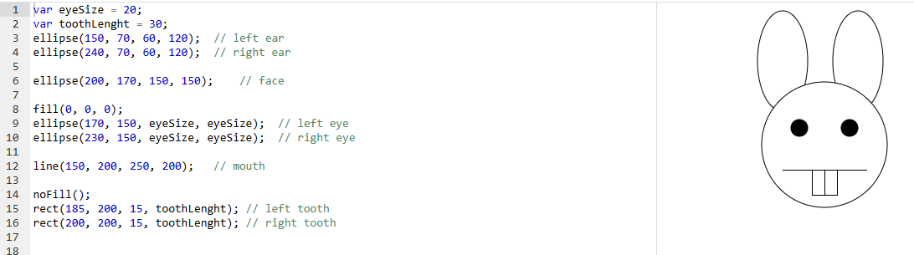

Dientes de conejo
Un conejo dibujado con figuras básicas. El tamaño de los ojos y el largo de los dientes están guardados en variables, de modo que se pueden modificar sin tocar el resto del código.
Resultado
Código
Código del proyecto de Khan Academy. En js/conejo.js está envuelto en setup() para funcionar con p5.js en una página web.
var eyeSize = 20;
var toothLenght = 30;
ellipse(150, 70, 60, 120); // left ear
ellipse(240, 70, 60, 120); // right ear
ellipse(200, 170, 150, 150); // face
fill(0, 0, 0);
ellipse(170, 150, eyeSize, eyeSize); // left eye
ellipse(230, 150, eyeSize, eyeSize); // right eye
line(150, 200, 250, 200); // mouth
noFill();
rect(185, 200, 15, toothLenght); // left tooth
rect(200, 200, 15, toothLenght); // right toothConceptos que se practican
| Elemento | Qué hace |
|---|---|
Variables como parámetros | eyeSize y toothLenght permiten ajustar el dibujo cambiando un solo valor. |
line(x1, y1, x2, y2) | Dibuja la boca como una línea recta entre dos puntos. |
noFill() | Hace que las figuras siguientes solo tengan contorno (los dientes quedan huecos). |
Orden de dibujo | Las orejas se dibujan antes que la cara para que la cara las tape parcialmente. |
Captura del editor original
